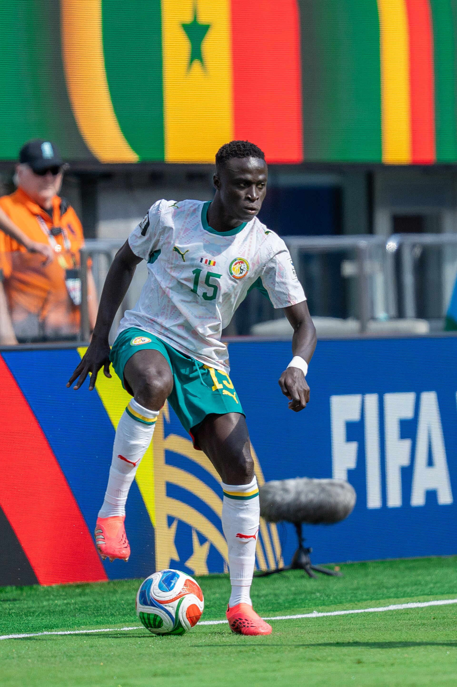

国家队
为塞内加尔而战
2019 年至今 · 15 号 · 约 65 次出场
国家队生涯
迪亚塔自 2019 年起代表塞内加尔国家队出战，身披 15 号，至今累计约 65 次出场、2 粒进球。转型右后卫后，他成为球队右路的主力人选，随队夺得 2026 年非洲杯冠军，并经历了多届非洲杯与两届世界杯。

64出场
2进球
15号码
2019首秀
大赛足迹
2019
首秀与非洲杯决赛
2019 年完成国家队首秀，同年随塞内加尔杀入非洲杯决赛（0-1 不敌阿尔及利亚，获得亚军）。
2022
卡塔尔世界杯
入选 2022 卡塔尔世界杯阵容，随队从小组赛出线并闯入 16 强。
2023/24
科特迪瓦非洲杯
入选塞内加尔 2023 非洲杯（2024 年 1 月在科特迪瓦举行）阵容。
2026
非洲杯冠军
随塞内加尔夺得 2026 年非洲杯冠军（决赛 1-0 击败东道主摩洛哥）。
2026
美加墨世界杯
随塞内加尔晋级并出战 2026 美加墨世界杯。